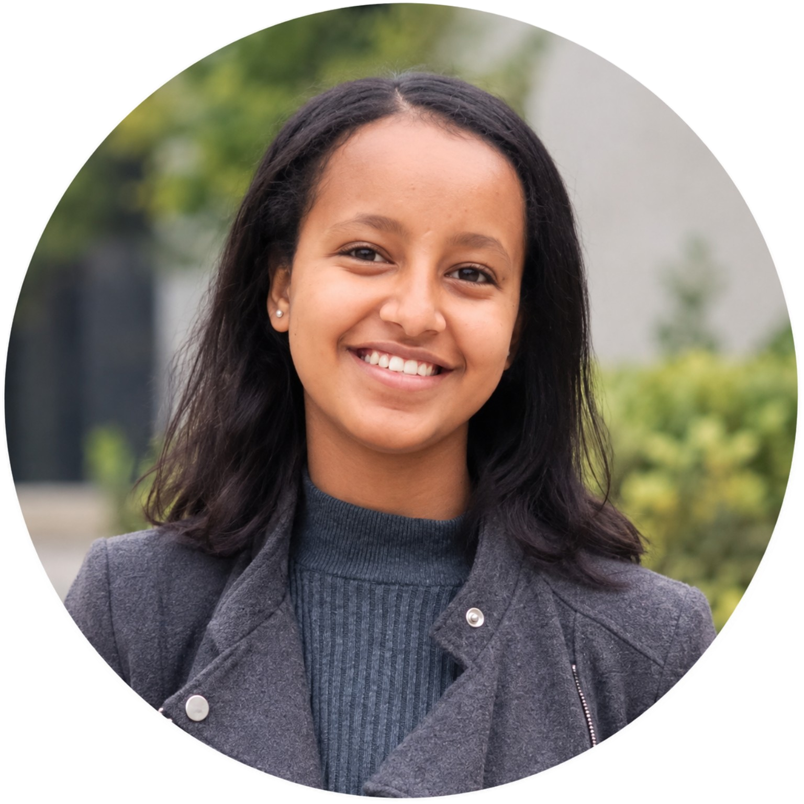

✦
CURRENT LEARNING
STEM education
I am currently grade 10 student at Bahir Dar University STEM Incubation center.I am developing my understanding of science, mathematics, technology, and problem-solving through my STEM learning journey.
Hello, I'm Betelhem Yibeltal — a student who enjoys exploring technology, solving problems, and turning new ideas into opportunities to learn.

A LITTLE ABOUT ME
I believe learning is more than memorizing facts. It is asking questions, trying different approaches, learning from mistakes, and using what I discover to solve real problems.
My interests include computer science, programming, algorithms, and creative technology. Through school and STEM experiences, I am continuing to build my skills and discover the kinds of problems I want to help solve.
This website is a growing record of my experiences, projects, and goals. I hope it reflects not only what I have learned, but also what I am excited to learn next.
WHERE I'M LEARNING
The places and experiences that help me build knowledge, confidence, and new skills.
I am currently grade 10 student at Bahir Dar University STEM Incubation center.I am developing my understanding of science, mathematics, technology, and problem-solving through my STEM learning journey.
I have explored programming languages including Python, C++, and HTML, and I am continuing to practice by solving problems and making projects.
During this four-week program, I studied Python and algorithms, practiced breaking complex problems into smaller parts, and learned to test ideas, learn from mistakes, and persist when my first solution did not work.
MILESTONES
Achievements can be awards, programs, personal progress, or moments when you challenged yourself.
Completed an intensive four-week summer program focused on Python and algorithms.
01Participated in AI for Good summer training at Bahir Dar University STEM Center in 2025.
02Continuing to develop programming and problem-solving skills by exploring ideas and practicing what I learn.
03MADE WITH CURIOSITY
A snapshot of what I am learning and what I want to build next.
A program idea that recommends books based on a reader's interests or mood, with descriptions and author information.
Exploring how sensors, microcontrollers, and displays can work together to measure conditions and communicate useful information.
Practicing how to break problems into steps, compare possible solutions, and improve code through testing.
Ongoing learningWHAT SPARKS MY CURIOSITY
Understanding how programs work and how algorithms solve problems.
Exploring how technology can support people and address real needs.
Learning how ideas become experiments, tools, and useful solutions.
Enjoying challenges that require patience, logic, and creative thinking.
LOOKING AHEAD
I want to keep growing in computer science and software engineering, especially in areas such as cybersecurity. My long-term goal is to use technology thoughtfully to solve problems and contribute to positive change in Ethiopia and beyond.
I know there is a lot more to learn. For now, I am focusing on building strong foundations, working on projects, learning from others, and staying curious.
Let's connect →